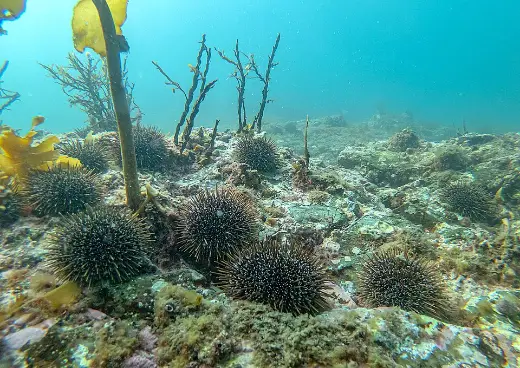

Starters & snacks · Popular in Northland and Auckland and East Coast and Hawke's Bay
Kina on toast
Kina on toast is made with wild kina, a favourite in Northland and Auckland and East Coast and Hawke's Bay.

How do you make kina on toast?
Fresh kina roe on buttered bread.
Wild ingredients
- Kina (Evechinus chloroticus): in season June to October
Watch the recipe

Video: Piri's Tiki Tour on YouTube